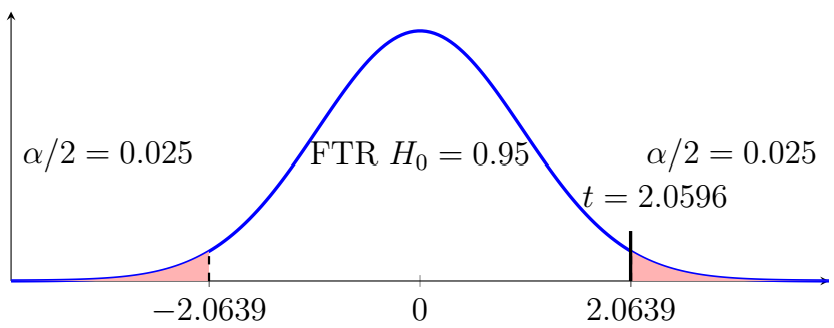

Chapter 10: Advanced Hypothesis Testing
Section 10.3: Testing Unmatched Pairs
Independent Samples
Definition: Unmatched (Independent) Samples
Unmatched samples occur when the observations in one sample are independent of the observations in the other sample.
The parameter of interest is
\[\mu_1-\mu_2,\]and its sample estimate is
\[\bar{x}_1-\bar{x}_2.\]Examples include comparisons between
- two different schools;
- two different treatments given to different groups;
- customers from two different stores;
- two independent demographic groups.
In an independent-samples design, observations in one sample are unrelated to observations in the other sample. The two groups may receive different treatments, or they may simply represent different populations or conditions. In many cases, one group is considered the control group and receives the typical treatment while the other group is considered the experimental group and receives a new treatment.
For independent samples, the margin of error accounts for the variability in both samples.
Confidence Interval for Two Independent Means
Confidence Interval for Two Independent Means
When the population standard deviations are unknown, a Welch two-sample \(t\) confidence interval can be used without assuming that the two population variances are equal.
\[(\bar{x}_1-\bar{x}_2)\pm t_{\alpha/2,\nu}\sqrt{\frac{s_1^2}{n_1}+\frac{s_2^2}{n_2}}\]where \(\nu\) is the degrees of freedom. The Welch-Satterthwaite equation provides an approximate degrees of freedom for the Welch procedure.
\[\nu =\dfrac{\left(\dfrac{s_1^2}{n_1}+\dfrac{s_2^2}{n_2}\right)^2}{\dfrac{\left(\dfrac{s_1^2}{n_1}\right)^2}{n_1-1}+\dfrac{\left(\dfrac{s_2^2}{n_2}\right)^2}{n_2-1}}\]This textbook uses the conservative \(t\) procedure with \(\nu=\min(n_1 -1,n_2 -1)\) for hand calculations. Statistical software commonly uses the Welch-Satterthwaite approximation.
Example 1
A researcher compares examination scores from two independent classes.
For Class 1,
\[n_1=25, \qquad \bar{x}_1=82, \qquad s_1=8.\]For Class 2,
\[n_2=30, \qquad \bar{x}_2=77,\qquad s_2=10.\]Determine the confidence interval for the difference of population means at \(\alpha=0.05\).
Solution
Since \(c=95\%=0.95\), \(\alpha=0.05\) and \(\alpha/2=0.025\). With \(n_1=25\) and \(n_2=30\), we can use the conservative estimate \(\nu=24\). From the Student's \(t\) table, \(t_{0.025,24}=2.064\). The margin of error is
\[E=t_{\alpha/2,\nu}\sqrt{\frac{s_1^2}{n_1}+\frac{s_2^2}{n_2}}=(2.064)\sqrt{\frac{8^2}{25}+\frac{10^2}{30}}\approx5.01.\]The difference is \(\bar{x}_1 -\bar{x}_2 =82-77=5\). Therefore, the confidence interval is \(5\pm5.01\), or \((-0.01,\;10.01)\). More formally, we are 95% confident that the population mean score for Class 1 minus the population mean score for Class 2 is between \(-0.01\) and \(10.01\) points.
Hypothesis Test for Two Independent Means
Hypotheses and Test Statistic
A common hypothesis test is
\[H_0:\mu_1-\mu_2=0 \text{ versus }H_1:\mu_1-\mu_2\neq0.\]One-sided tests are also possible:
\[H_0:\mu_1-\mu_2\leq 0 \text{ versus }H_1:\mu_1-\mu_2>0\]or
\[H_0:\mu_1-\mu_2\geq 0 \text{ versus }H_1:\mu_1-\mu_2<0.\]The test statistic is
\[t=\frac{(\bar{x}_1-\bar{x}_2)-0}{\sqrt{\dfrac{s_1^2}{n_1}+\dfrac{s_2^2}{n_2}}}\]with degrees of freedom \(\nu=\min(n_1 -1,n_2 -1)\).
Example 2
A researcher compares examination scores from two independent classes.
For Class 1,
\[n_1=25, \qquad \bar{x}_1=82, \qquad s_1=8.\]For Class 2,
\[n_2=30, \qquad \bar{x}_2=77,\qquad s_2=10.\]Test whether the population means differ at \(\alpha=0.05\).
Solution
- Claim – The classes have the same means.
- Complement of the claim – The classes have different means.
- Hypotheses – \(H_0:\mu_1=\mu_2\), \(H_1:\mu_1\neq\mu_2\).
- Significance level – \(\alpha=0.05\).
- Select the test statistic – Since \(\sigma\) is unknown, \(t\).
- Compute the test statistic. \[t=\frac{82-77}{\sqrt{\dfrac{8^2}{25}+\dfrac{10^2}{30}}}=\frac{5}{\sqrt{2.56+3.333}}\approx2.0596.\]
- Determine the critical values – Using the conservative degrees-of-freedom approximation, \(\nu=\min(n_1 -1,n_2 -1)=\min(24,29)=24\). Therefore, \(t_c\approx\pm2.0639\).

Two-tailed test: the test statistic t = 2.0596 falls just short of the critical value 2.0639. - Decision – Since \(2.0596<2.0639\), we fail to reject \(H_0\); there is insufficient evidence to conclude that the population means differ. We can see this graphically as \(t\) falls outside the critical region.
- Conclusion – There is insufficient evidence at the 5% significance level to conclude that the population mean examination scores differ between the two classes.
If we use the \(p\)-value method we find \(0.05<p<0.10\), resulting in the same conclusion, although we can see it is very close to the value for \(\alpha=0.05\).